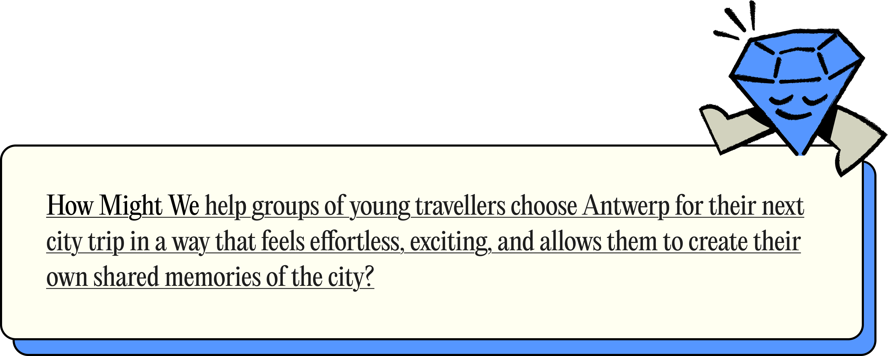
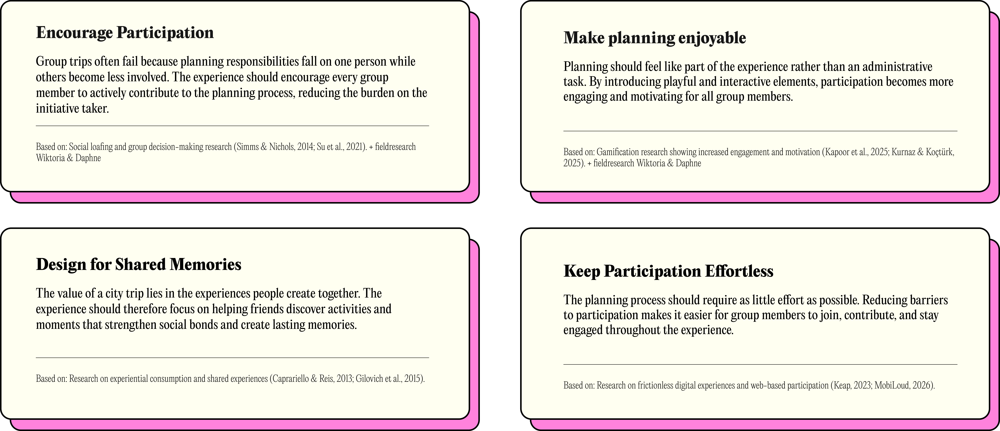
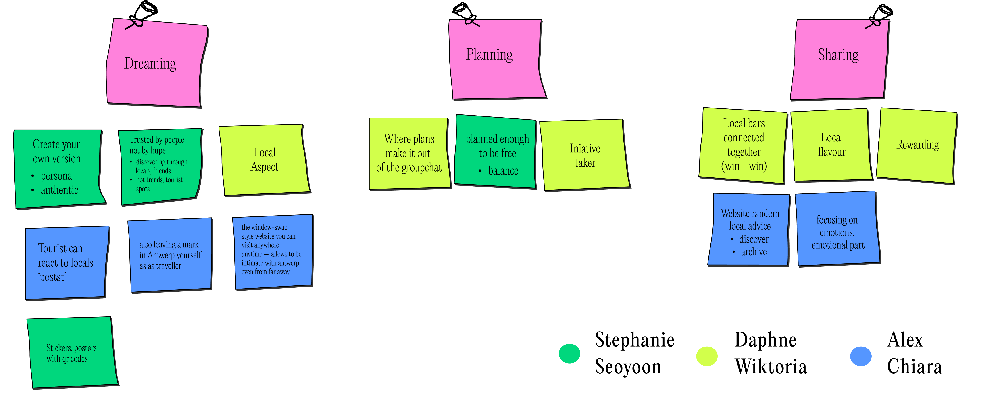
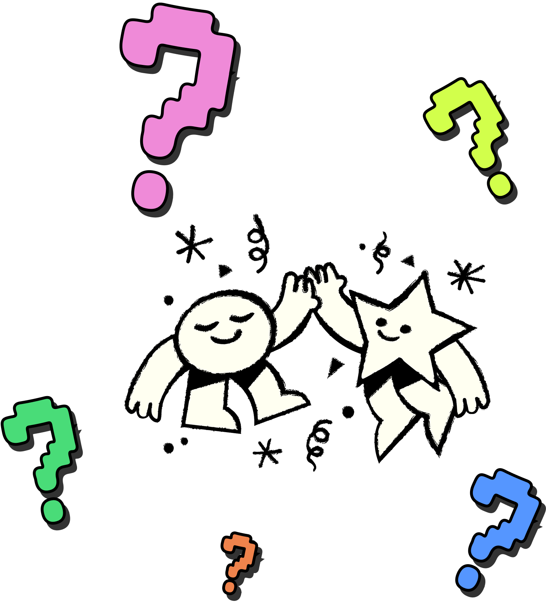
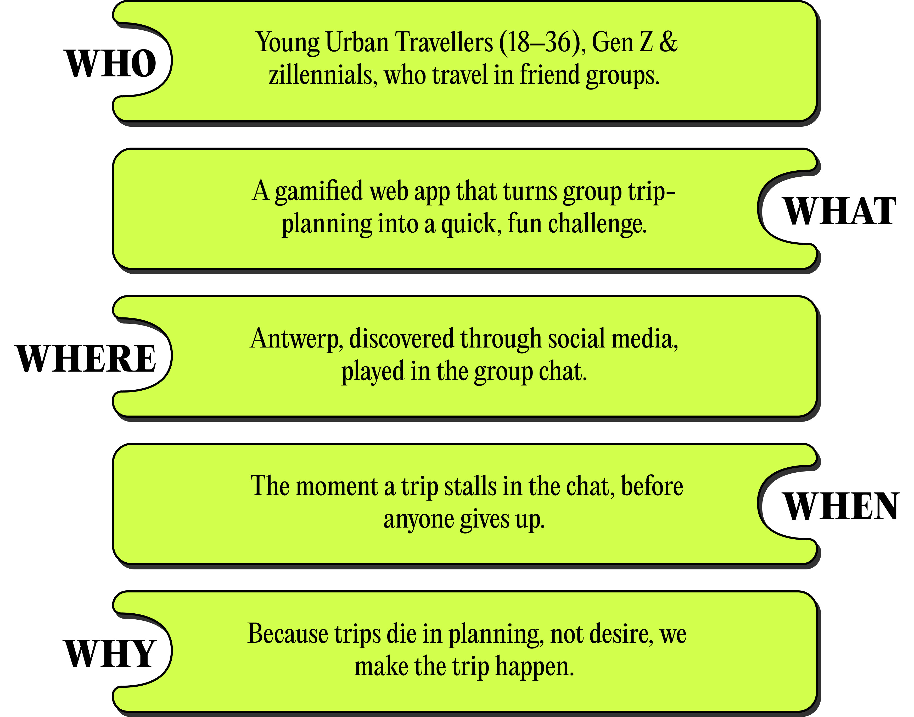

CONCEPT
Merging concepts
Ready to Antwerp is a gamified web application that makes planning a city trip with friends more engaging and less stressful. Users compete in a short mini-game, share their interests and availability, and contribute to the planning process in a fun way. Based on the group's preferences, the platform suggests suitable dates and personalised activities in Antwerp. Rewards from local partners encourage participation and make the experience more memorable.

HMW question
Our re-concepting phase began with a How Might We question that served as the foundation for ideation and concept development. As we gathered new insights through research and testing, we continuously refined this question to ensure it addressed the most relevant user needs and opportunities. The final version became:


Gigamapping
During a dedicated masterclass, we used gigamapping to explore our concept and its wider ecosystem. We mapped the relationships between key elements such as the initiative taker, reward system, game mechanics, local businesses and the connection between tourists and locals, all centred around our How Might We question. This exercise helped us understand the project as a connected system and clarified how the different elements influence one another.
Design principles
Based on the insights gathered from our research, the strengths of the previous concepts, the findings from our additional research and the outcomes of the gigamapping session, we developed a set of design principles. These principles served as a foundation for our brainstorming and concept development process, helping us ensure that all ideas remained aligned with the needs of the target audience and the goals of the project.

Brainstorming
We ran a team brainstorm structured around the three journey phases we wanted to own: Dreaming, Planning, and Sharing. Ideas explored authentic local discovery (Dreaming), getting the trip out of the group chat (Planning), and the local win-win and emotional sharing loop (Sharing). These three threads became the backbone of our concept.

5 W-questions
To validate the concept, we used the 5W framework to examine it from different perspectives. By answering questions about who, what, when, where and why, we ensured that the concept was coherent, well-defined and grounded in the needs of both users and stakeholders.



User journey
Collaborations
For the friends
A real reason to do activities together, discounts at genuinely cool local places, and a curated shortlist that feels discovered, not marketed.
For the local business
Access to young visitors who actively distrust ads, new foot traffic, and visibility among exactly the audience that's hardest to reach.
For Visit Antwerp
In-destination spend directed toward independent, authentic venues, reinforcing the city's image as a place for young friend groups, not just landmarks.